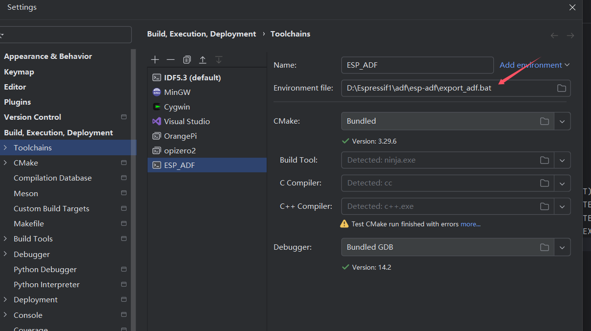

ADF
ADF 暂未集成新建项目功能，但可以使用任务树，配置UI和调试等。
可以参考ADF的向导从步骤1 开始
本篇采用的adf 在递归clone内置的idf， 以避免 adf和 idf版本不兼容。
主要操作如下:
前置条件
已经设置好idf环境需要的组件，如果安装过idf，那么必备的python git已经存在于系统，至于不同系统也有一些相关组件需要安装。可以参考前面新建项目部分的准备。
比如windows下至少需要git，然后python3可以在PATH变量中找到其路径，但不建议使用最新版本python3。可以根据安装时比如ubuntu主流python3版本抉择。
1.clone adf源码
因为idf是不兼容有空格路径，请在一个无空格路径下 操作。
无法克隆时使用代理
需要替换代理服务器地址为实际代理程序真实监听地址
2.安装
这里采用了windows和ubuntu24验证
2.1 为ADF安装IDF
进入 esp-adf目录下的 esp-idf目录
运行命令行终端 执行
或者使用乐鑫中国下载站
继续执行
export.bat/export.sh
执行完毕 保留cmd窗口。此时当前命令行会话的已经含有IDF的环境变量。
2.2 安装ADF
是在上一步操作中的cmd窗口 退回到 esp-adf目录或者说是 clone 下来ADF的根目录。
cd ..安装ADF 运行命令行终端 执行
或者使用乐鑫中国下载站
执行
export.bat/export.sh导出ADF的环境变量。
配置Clion Toolchain
在ADF例子中项目的根CMakeLists.txt里面一般会包含ADF和IDF所在目录的cmake文件
从上述内容看出这里需要两者的环境变量。一般新建一个System类型的Toolchain，同时将ADF和其目录下的idf的环境变量配置到该Toolchain才能正常cmake。
新建导出ADF需要的环境变量的脚本
保留之前 2.2安装的完成的命令行，此命令行已经包含了ADF和IDF所有环境变量。
这个时候可以自己制作一个最简单环境变量导出脚本，也就是只导出环境变量不含任何逻辑的脚本。
这一步需要仔细操作，确保得到脚本格式正确可以导出环境变量。
windows下使用 SET 命令可以打印当前命令行所有环境变量。 则使用
SET >export_adf.bat制作一个脚本， 然后编辑该脚本给行首加上set这样得到一个脚本大致内容是
linux下已经验证(mac暂未尝试) 理论上使用
env >export_adf.sh得到脚本后给行首加上export便可 类似以下内容:
配置ToolChain
新建一个System类型的Toolchain，选择上一步新建的脚本即可。

打开ADF项目
打开ADF项目时选择刚才新建的Toolchain 然后将cmake输出路径改成 build文件夹。
可使用命令树大部分节点，但IDF Export Console 不可使用。